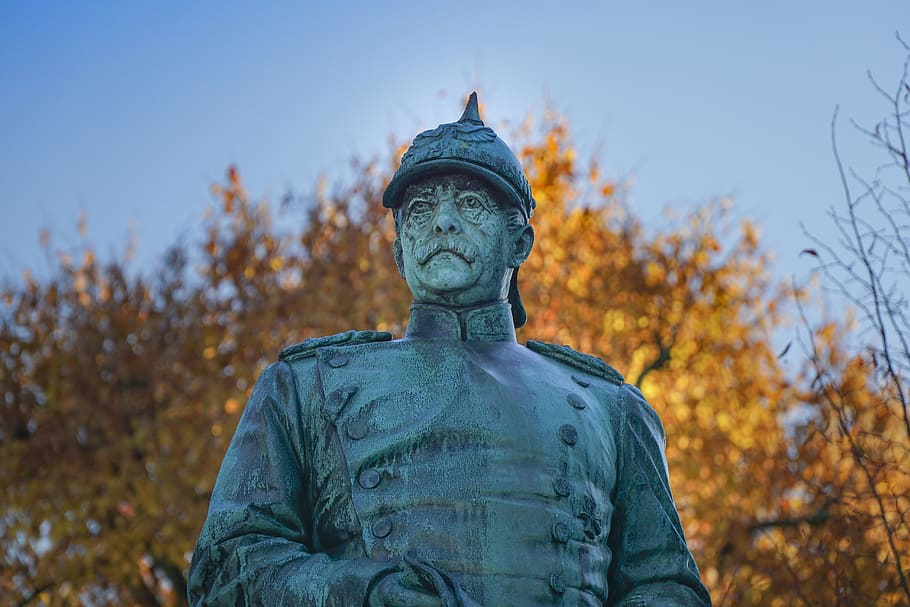

Introduction
Otto von Bismarck was a German statesman and the first Chancellor of the German Empire. He is known for his role in the unification of Germany and his diplomatic efforts to maintain peace in Europe in the late 19th century.
Key Accomplishments
- Unification of Germany in 1871
- Creation of the German Empire under Emperor Wilhelm I
- Master of Realpolitik diplomacy
- Institution of welfare state reforms in Germany
Important Events in Bismarck’s Life
- 1862: Became Prime Minister of Prussia
- 1866: Austro-Prussian War
- 1870-71: Franco-Prussian War, leading to German unification
- 1890: Dismissal from office by Emperor Wilhelm II
Learn More
For more detailed information about Otto von Bismarck, you can visit this Wikipedia page.
